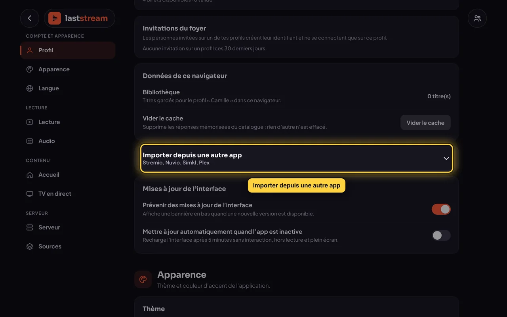
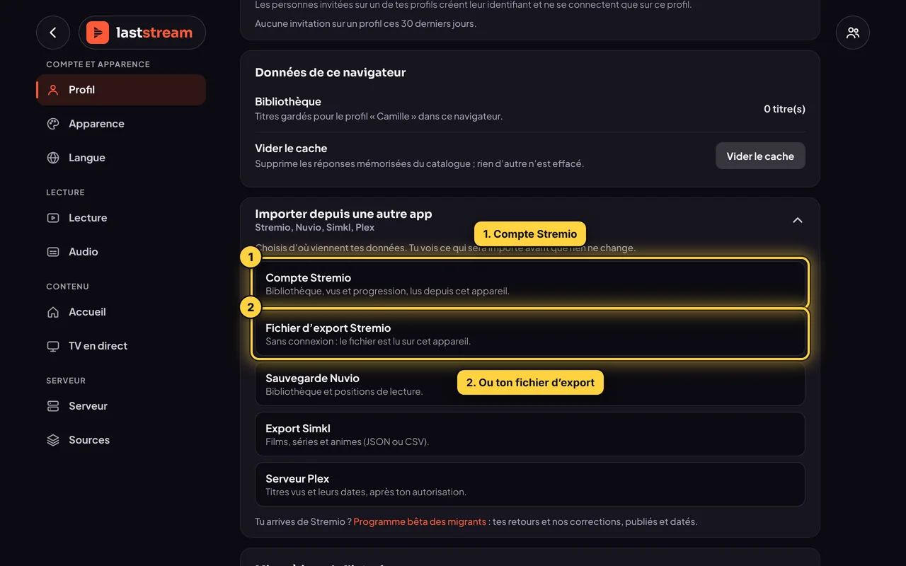
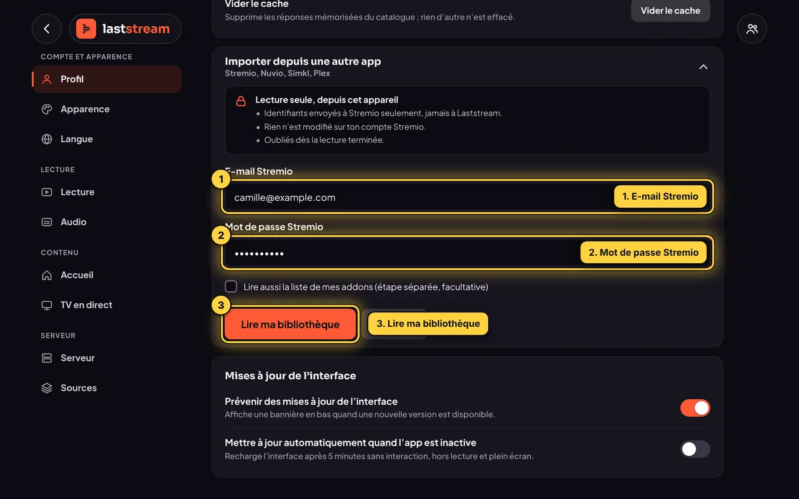
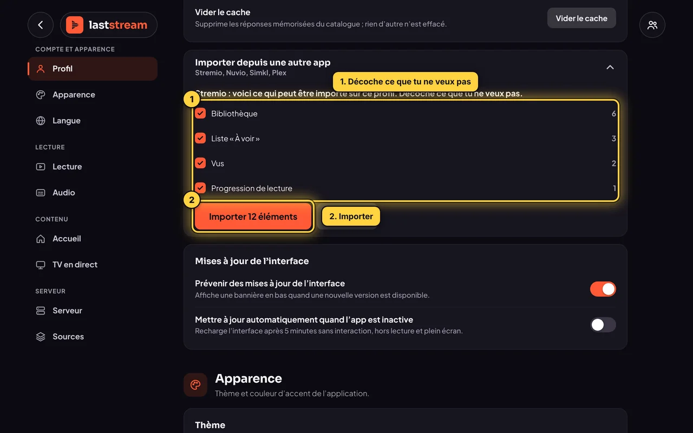
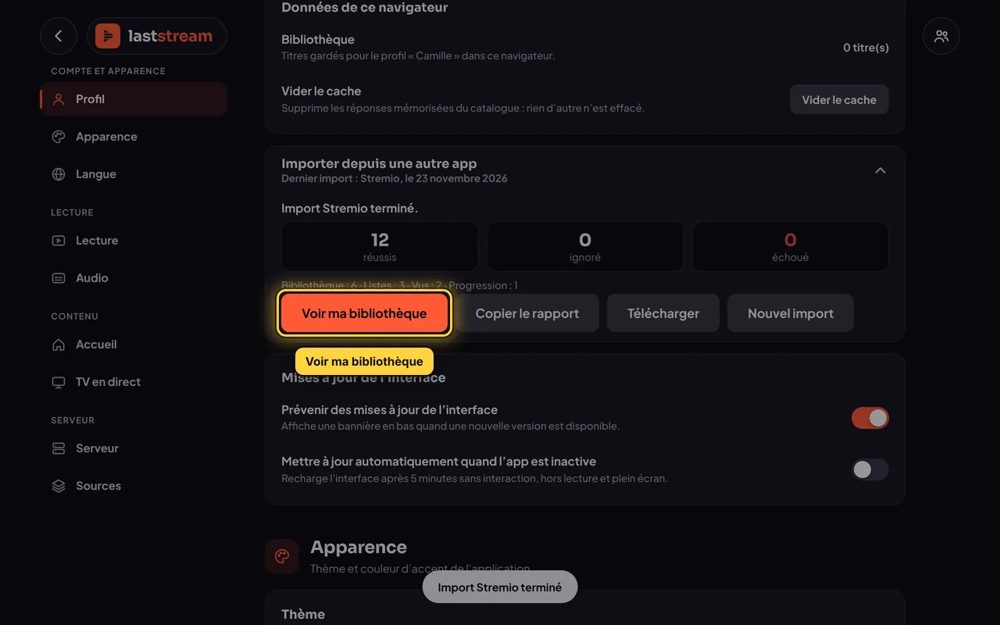
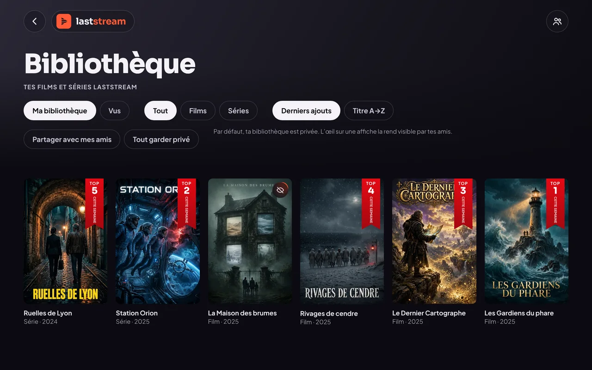

Prérequis
- Ton e-mail et ton mot de passe Stremio, ou un fichier d’export Stremio.
- Le profil Laststream qui doit recevoir les titres, ouvert.
Étapes
Sur chaque capture, le cadre jaune montre où toucher ou cliquer ; les numéros donnent l’ordre.
-
Ouvre les « Réglages », catégorie « Profil », et descends jusqu’à « Importer depuis une autre app ».

-
Choisis « Compte Stremio » (1). Sans connexion à ton compte, « Fichier d’export Stremio » (2) lit un fichier sur cet appareil.

-
Lis l’avertissement puis touche « J’ai compris, continuer ».
Saisis ton e-mail (1) et ton mot de passe Stremio (2), puis « Lire ma bibliothèque » (3).

-
Laststream montre ce qui peut être importé : « Bibliothèque », « Liste « À voir » », « Vus », « Progression de lecture ». Décoche ce que tu ne veux pas (1), puis « Importer » (2).

-
À la fin, le bilan donne les éléments réussis, ignorés et échoués. Touche « Voir ma bibliothèque ».

-
Tes titres Stremio sont dans ta bibliothèque, avec leur état vu et leur progression.
